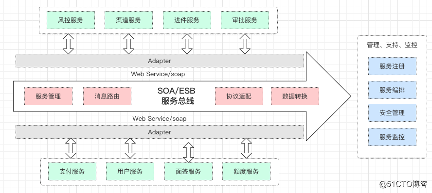
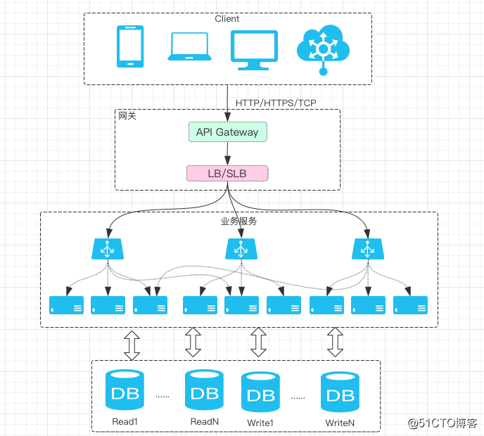
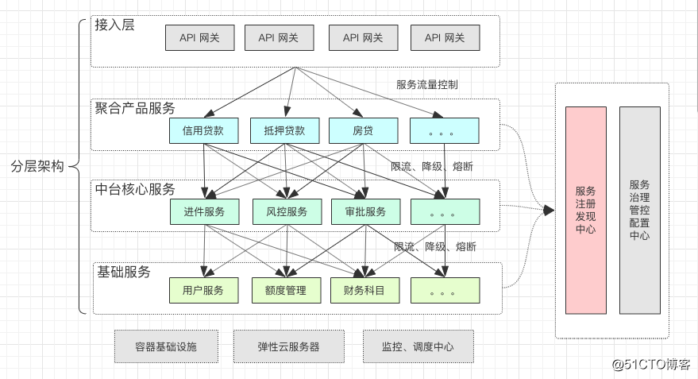
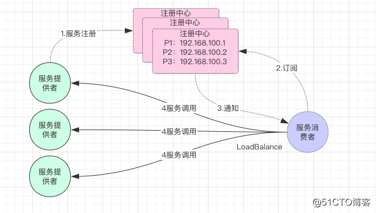
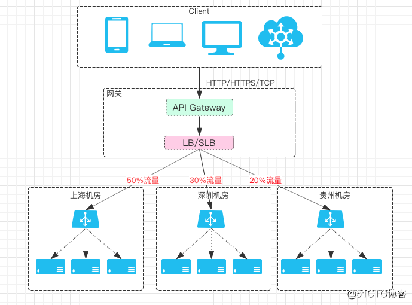
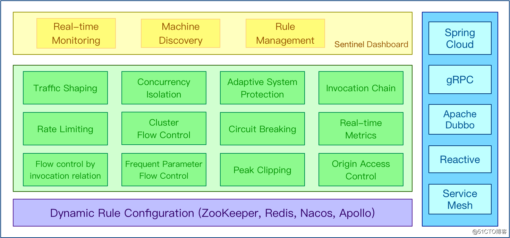
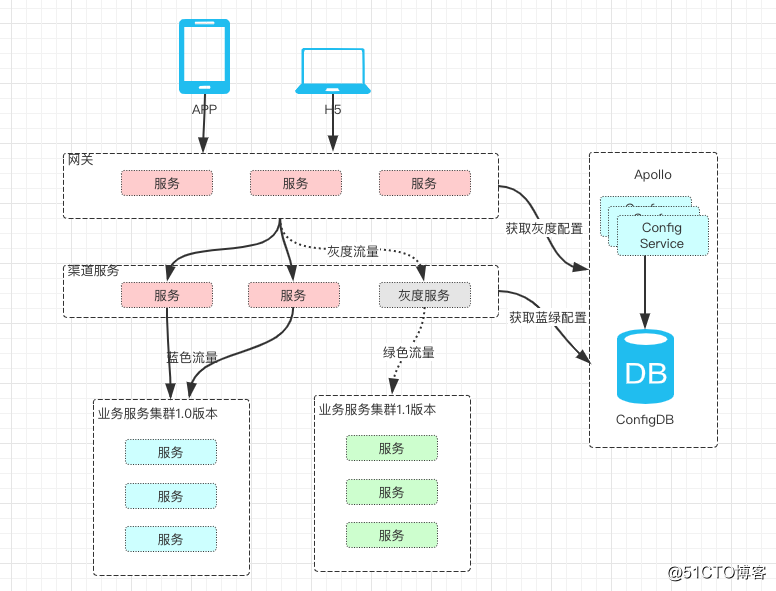
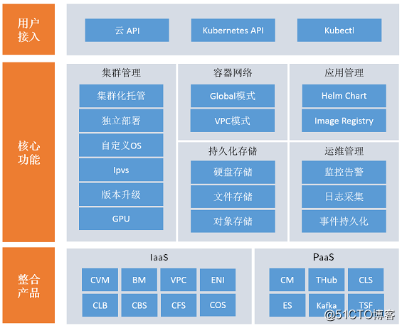

03 互联网金融高并发架构微服务治理方案实践
互联网金融服务治理面临的挑战
传统金融行业，在业务线下转线上、零售化互联网转型的过程中，面临诸多技术和架构的挑战。一方面，系统架构需具备金融高可用、高标准、低风险的技术基础，另一方面，需求必须兼具互联网规模化的服务能力、具备互联网架构高并发、高性能、高扩展的能力。对于传统金融系统，未经历大规模互联网线上化的考验，往往一次洪峰、一次线上促销活动就把系统压垮了。
特别是面向C端的消费金融的架构体系，面对这种情况我们需要进行微服务的改造和建设，引入服务治理框架（在上一章节介绍过Dubbo与Spring Cloud），随着微服务的拆分，服务集群的数量指数级的增加，架构的复杂也相继增加，那么怎样对微服务架构进行有效的治理成为了互联网金融服务治理面临的主要架构问题。
互联网金融架构服务治理面临的常见问题
1）金融系统耦间合度高
- 金融业务涉及面广，但系统模块划分简单，并且模块职责不明确；
- 所有模块共用一个数据库，主数据库的表已经超过一千张；
2）金融系统服务间调用链混乱
- 服务间的调用随意，没有进行合理的服务调用链规划；
- 存在循环调用，调用链过长等问题；
3）金融系统性能差
- 系统臃肿导致系统容易出现大规模单点故障，牵一发而动全身；
- 单点的jvm和容器的性能瓶颈容易成为性能瓶颈；
4）缺乏有效的降级、熔断手段
- 老系统往往缺乏熔断、限流、降级，超时控制，蓄洪等服务治理的能力；
5）快速交付的挑战
- 互联网金融平台的系统，在面对高并发服务的要求，往往需要快速交付、快速上线，如果服务臃肿庞大，就难以做到快速灵活的发布；
- 需要进行微服务化设计，将庞大臃肿的系统化整为零，每个服务集群能够独立发布和部署，快速应对性能需求和业务需求。
互联网消费金融的服务化架构方案
服务化的特点
在介绍互联网消费金融的服务化架构设计之前，我们先介绍一下，服务化主要有如下特点：
- 应用按业务模块，拆分成独立服务；
- 各个服务均可独立发布和部署，独立运维；
- 每个服务可被多个应用共享；
- 服务之间可以通过HTTP、RPC、Soap等协议进行通信。
常用的服务化架构方案有：
- 企业级SOA架构方案
- 互联网服务化架构方案
- 微服务架构方案
消费金融企业级SOA架构方案设计
 消费金融企业级SOA架构特点
- 主要解决的问题是已有系统的整合(互联互通)问题
- 手工治理比重大、自动化程度不足
- 技术实现及流程繁琐复杂、治理成本高
- 覆盖面广、涵盖企业IT各方面，和IT治理重叠度高
- 传统IT大厂(IBM、Oracle)把持标准
消费金融互联网服务化架构方案设计

消费金融互联网服务化架构特点
- 伴随消费金融业务规划拆分应运而生
- 主要解决业务的快速响应及系统复杂性扩散问题
- 技术实现形式五花八门，有标杆、但没有统一标准
- 聚焦线上服务的生命周期治理
- 强调自动化
消费金融微服务架构方案设计

消费金融微服务架构特点
- 大中型金融企业推荐建设微服务架构，搭建微服务治理平台、标准化微服务设计；
- 微服务集群的运维和容器技术紧密结合
- 量变导致质变，不仅仅是服务化架构的延伸 组织架构、管理策略、研发模式、测试、运维等领域 都要做出相应的调整，以为微服务架构的落地创造合 适的“土壤”。
- 线上化全生命周期的服务治理
- 测试自动化、运维智能化
互联网消费金融线上化微服务治理建设实践
建设服务注册发现中心
互联网消费金融服务治理领域最重要的问题之一就是服务发现与注册中心的建设。在服务治理框架中，如Dubbo和Spring Cloud中均引入了一个服务注册发现中心的概念，服务的注册与发现、服务的上线与下线主要就依赖这个服务中心。

注册中心服务注册发现的具体过程
1）服务提供者启动，向注册中心注册自己提供的服务； 2）消费者启动，向注册中心订阅自己需要的服务； 3）注册中心返回服务提供者的列表给消费者； 4）消费者从服务提供者列表中，按照软负载均衡算法，选择一台发起请求；
注册中心的服务治理的特点
注册中心职责简单，只负责注册查找，不负责请求转发，压力小； 消费者本地缓存服务地址列表，注册中心宕机影响不影响服务调用； 注册中心可搭建集群，宕掉一台自动切换到另外一台； 服务提供者无状态，可动态部署，注册中心负责推送； 消费者调用服务者，自动软负载均衡；
注册中心搭建选型 服务注册发现中心Zookeeper介绍
社区活跃度：中 CAP模型：CP 控制台管理：不支持 适用规模（建议）：十万级 健康检查：Keep Alive 易用性：易用性比较差，Zookeeper的客户端使用比较复杂，没有针对服务发现的模型设计以及相应的API封装，需要依赖方自己处理。对多语言的支持也不太好，同时没有比较好用的控制台进行运维管理。 综合建议：更新较慢，功能匮乏，使用部署较复杂，不易上手，维护成本较高。
服务注册发现中心Eureka介绍
社区活跃度：低，已停止开源维护 CAP模型：AP 控制台管理：支持 适用规模（建议）：十万级 健康检查：Client Beat 易用性：较好，基于SpringCloud体系的starter，帮助用户以非常低的成本无感知的做到服务注册与发现。提供官方的控制台来查询服务注册情况。 综合建议：eureka当前停止开源不建议企业级使用
服务注册发现中心Consul介绍
社区活跃度：高 CAP模型：CP 控制台管理：支持 适用规模（建议）：百万级 健康检查：TCP/HTTP/gRPC/Cmd 易用性：较好，能够帮助用户以非常低的成本无感知的做到服务注册与发现。提供官方的控制台来查询服务注册情况。 综合建议：集成简单，不依赖其他工具，推荐大中型企业使用。
服务注册发现中心Nacos介绍
社区活跃度：高 CAP模型：CP+AP 控制台管理：支持 适用规模（建议）：百万级 健康检查：TCP/HTTP/MYSQL/Client Beat 易用性：较好，能够帮助用户以非常低的成本无感知的做到服务注册与发现。提供官方的控制台来查询服务注册情况。 综合建议：阿里巴巴背书，更新速度快，文档完善，社区活跃度高，推荐大中型企业使用。
互联网消费金融微服务流量治理实践
互联网消费金融系统微服务流量控制设计
金融系统平时平稳，但遇到大促的时候，机器的load会爆发式增长，这时候对系统的负载保护就显得非常重要，以防止雪崩。流量控制提供了对应的保护机制，让系统的入口流量和系统的负载达到一个平衡，保证系统在能力范围之内处理最多的请求。
通常，在消费金融系统我们进行流量治理时，架构设计会重点考虑以下场景和因素：
流量控制与调度
流量的控制从入口开始，对流量负载按权重进行调度调配，同时根据底层的压力进行动态调整。这里的流量分配主要涉及到两方面：
一是多系统在改造过程中的新旧系统的流量分配； 二是建设有多集群副本的情况下的流量控制，如蓝绿、灰度发布，同城双活，异地多活等；

限流、熔断与降级设计 事先制定好保护预案 1） 通过压测预知系统所能承载的压力和并发量； 2） 降级的降级策略与业务紧密结合，比如某个接口在降级的情况下应该返回默认值还是给用户错误提示等； 3） 系统在超出承受能力触发熔断时，我们应该做哪些处理，如紧急扩容服务、简化部分业务的流程等；
常用的限流算法选择策略有 1） 漏桶算法：漏桶算法(Leaky Bucket)是网络世界中流量整形（Traffic Shaping）或速率限制（Rate Limiting）时经常使用的一种算法，它的主要目的是控制数据注入到网络的速率，平滑网络上的突发流量。漏桶算法提供了一种机制，通过它，突发流量可以被整形以便为网络提供一个稳定的流量。 2） 令牌桶算法：在一个桶内按照一定的速率放入一些 token，然后，处理程序要处理请求时，需要拿到 token，才能处理；如果拿不到，则不处理。 3） 队列算法。入队速率波动，消费可以相对匀速处理，队列满则丢弃。具体可以分为普通队列、优先级队列、权重队列等，来应对不同的场景。
限流原则： 1）限流前置 2）集群限流
微服务流量治理框架选型
目前比较流行的开源流量治理框架有：
Spring Cloud官方默认的熔断组件Hystrix（已停止维护）； 较轻量的熔断降级库resilience4j（轻量级）； Google开源工具包Guava提供了限流工具类RateLimiter（功能较单一）； 阿里巴巴的开源框架Sentinel（推荐）；
Sentinel 的优势和特性： 
1）轻量级，核心库无多余依赖，性能损耗小。
2）方便接入，开源生态广泛。Sentinel 对 Dubbo、Spring Cloud、Web Servlet、gRPC 等常用框架提供适配模块，只需引入相应依赖并简单配置即可快速接入；同时针对自定义的场景 Sentinel 还提供低侵入性的注解资源定义方式，方便自定义接入。
3）丰富的流量控制场景。Sentinel 承接了阿里巴巴近 10 年的双十一大促流量的核心场景，流控维度包括流控指标、流控效果（塑形）、调用关系、热点、集群等各种维度，针对系统维度也提供自适应的保护机制。
4）易用的控制台，提供实时监控、机器发现、规则管理等能力。 完善的扩展性设计，提供多样化的 SPI 接口，方便用户根据需求给 Sentinel 添加自定义的逻辑。
互联网消费金融微服务架构治理实践
互联网消费金融调用链治理 互联网消费金融业务复杂度高，对调用链的设计时应遵循以下设计原则： 1）模块间的调用应遵循ADP（The Acyclic Dependencies Principle，无环依赖原则）。当 A 模块依赖于 B 模块，B 模块依赖于 C 模块，C 依赖于 A 模块，此时将出现循环依赖。在设计中应该避免这个问题，可通过引入“中介者模式”解决该问题。 2）对调用链尽量简化，减少长链，去除多余的业务逻辑链路； 3）利用消息MQ机制进行异步通信，对模块&服务间进行解耦，减少同步调用，降低系统间的强依赖； 4）对异常链路进行容错处理； 5）建立完善的调用链监控平台（监控的设计会在后面章节详细介绍）；
互联网消费金融的微服务集群容错设计 常用的集群容错策略如下：
**Failover失败转移策略:**当发生调用异常时，重新选路，查找下一个可用的服务提供者。通常可以配置失败切换的最大次数和间隔周期，以防止E2E服务调用时延过大。
**Failback失效自动恢复策略：**Fail-over之后的自动恢复，在集群架构系统（有两台或多台服务器互联的网络）中，由于要某台服务器进行维修，需要网络资源和服务暂时重定向到备用系统。在此之后将网络资源和服务器恢复为由原始主机提供的过程，称为自动恢复
Failcache策略:Failcache策略是失败自动恢复的一种，在实际项目中它的应用场景如下：
服务有状态路由，必须定点发送到指定的服务提供者。当发生链路中断、流控等服务暂时不可用时，服务框架将消息临时缓存起来，等待周期T，重新发送，直到服务提供者能够正常处理该消息。
对时延要求不敏感的服务。系统服务调用失败，通常是链路暂时不可用、服务流控、GC挂住服务提供者进程等，这种失败不是永久性的失败，它的恢复是可预期的。如果消费者对服务调用时延不敏感，可以考虑采用自动恢复模式，即先缓存，再等待，最后重试。
通知类服务。例如通知粉丝积分增长、记录接口日志等，对服务调用的实时性要求不高，可以容忍自动恢复带来的时延增加。
**Failfast快速失败策略：**在业务高峰期，对于一些非核心的服务，希望只调用一次，失败也不再重试，为重要的核心服务节约宝贵的运行资源。此时，快速失败是个不错的选择。
互联网消费金融的微服务灰度发布设计 
灰度发布（又名金丝雀发布）是指在黑与白之间，能够平滑过渡的一种发布方式。AB test就是一种灰度发布方式，让一部用户继续用A，一部分用户开始用B，如果用户对B没有什么反对意见，那么逐步扩大范围，把所有用户都迁移到B上面来。灰度发布可以保证整体系统的稳定，在初始灰度的时候就可以发现、调整问题，以保证其影响度。 基于微服务的多版本管理机制 灰度路由策略，即可实现基于业务规则的灰度发布。
通常灰度策略 1）首先选取种子用户，哪些群体用户能够进行灰度版本体验； 2）流量路由控制：可以根据服务名(serviceName)、方法名(methodName)、版本号(versionName) 进行、 ip 规则等进行流量路由。 3）版本管理：包括版本信息、升级地址、升级方案、是否全量发布。其中升级方案包括热更新及官网更新，全量发布以最新的全量版本为准； 4）服务部署：每个服务集群管理一个版本，正式服务集群和灰度服务集群尽量配置和数量相等，也可以根据流量的多少进行动态分配。 5）灰度验证：将灰度流量逐步增加，需要同时验证业务功能的效果和系统架构的性能；验证完毕后可以考虑将所有集群统一升级至希望的版本。
架构资源治理
服务器资源：服务器是否闲置，访问量，吞吐量等； 数据库DB资源：慢查询治理，高频调用性能问题治理； 缓存cache资源：缓存命中率过低，读写比例是否合理； 消息队列MQ资源：消息是否堆积等。
互联网消费金融的微服务容量治理
动态扩容、减容设计
基于PaaS弹性云化平台或者Docker容器服务，可以实现基于负载的微服务弹性伸缩。 
线下服务治理体系
研发治理
统一研发工具：如Eclipse，IntelIJ IDEA； 统一JDK版本：如Java1.8.121 统一技术框架：Spring Boot 2.x 代码质量质量，如： 建立SonarQube，findBUG代码质量检测机制 建立代码review机制，组长review和团队GroupReview； 团队开发质量
1）团队人员技术考核 2）团队技术培训
测试治理
- 测试业务需求覆盖率
- 代码覆盖
- 测试用例维护成本度量
- 用例质量
- 性能测试标准
- 仿真测试能力，数据mock能力
流程与协作能力治理
- 标准的系统开发流程
- 标准的系统发布流程
- 团队间的协作能力
- 建立文档的规范标准
微服务治理为互联网消费金融带来的好处
上面提到了互联网金融在服务治理，微服务架构方面的一些知识。我们下面总结一下，一个良好的微服务架构设计和服务治理能为互联网消费金融业务领域带来什么好处。
1）使互联网消费金融业务系统架构上更加清晰，每个模块&微服务集群的职责明确，业务和系统的边界明确； 2）核心模块稳定，以服务组件为单位进行升级，避免了频繁发布带来的风险 3）开发管理方便 4）单独团队维护、工作分明，职责清晰 5）业务复用、代码复用度高 6）系统容易拓展